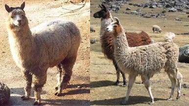
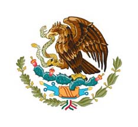
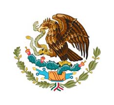
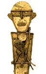
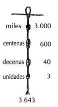
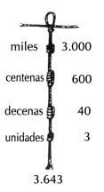
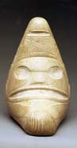

NOTAS - Capítulo 4
camélidos andinos: alpacas y llamas

Descendientes domesticados de dos variedades de camélidos salvajes (la vicuña y el guanaco respectivamente), las alpacas (a la izquierda) y las llamas (a la derecha), siguen siendo importantes en la economía andina. Constituyeron un elemento fundamental en la formación de sociedades complejas en los Andes por la carne y la lana que proporcionan y porque pueden mantenerse de una dieta del pasto resistente autóctono de las tierras altas, donde pocas plantas pueden sobrevivir las condiciones climáticas.
Chavín (zonas de influencia)
(Haz clic en el mapa.)
escritura logográfica y silábica
Los mayas desarrollaron no sólo un sistema de escritura logográfica (que corresponde a otras grandes tradiciones de escritura, como los jeroglíficos egipcios o las logografías chinas) sino también un silabario, es decir, un repertorio de símbolos que representaban todas las posibles combinaciones de consonantes y vocales en una sílaba, mediante lo cual, juntando los signos para diferentes sílabas, se podía escribir palabras completas. Los símbolos logográficos, por el contrario, representan palabras completas. (En su origen la escritura maya fue seguramente un sistema pictográfico, es decir, cada símbolo era un dibujo de la cosa que representaba y no un signo más o menos arbitrario como en el caso de una logografía.) En el Capítulo 4 se verán ejemplos de esta escritura.
Lago Titicaca
(Haz clic en el mapa.) El lago en su estado actual entre Bolivia y Perú. La ciudad antigua de Tiwanaku estaba situada en las orillas del lago, más amplio en siglos pasados.
pitorro de estribo
Típico diseño (ing. stirrup-spout) para vasijas ceremoniales en ciertas culturas preincaicas.
Quetzalcóatl
Nombre (en náhuatl) de una importante divinidad en los panteones mesoamericanos. Su nombre significa “serpiente emplumada”. Su papel en las mitologías de los diferentes pueblos mesoamericanos es complejo y no perfectamente comprendido hoy en día. Se le encuentra representado de diversas maneras y con diversos atributos, según la época y la cultura. Los teotihuacanos parecen haber sido los primeros en representar a este dios como entidad con cara serpentina y plumas adornándole el cuello. (Véanse las “Lecturas” de este capítulo para imágenes de esta deidad en Teotihuacán.)
terrazas andinas
Terrazas o bancales que permiten la explotación agrícola en zonas montañosas de mucha pendiente.

Wari (y Tiwanaku)
(Haz clic en el mapa).
águila del lago Texcoco
 

(Haz clic en la imagen para ampliarla.) Según las leyendas de los mexicas que se recopilaron después de la conquista, sus antepasados fundaron la ciudad de Tenochtitlán en el lugar donde vieron un águila posada sobre un nopal. En algún momento del siglo XVI, quizás debido a una mala traducción de fuentes indígenas, se añadió el detalle de que el águila tenía una serpiente en sus garras, lo que luego se convertiría en el escudo nacional de México. Arriba a la izquierda, una representación esquemática de los cuatro calpulli de Tenochtitlán con sus tlatoani sentados alrededor de la imagen del águila en la isla del lago, de un manuscrito preparado en el siglo XVI después de la conquista española que ya refleja la influencia estilística europea. Nótese que no tiene ninguna serpiente. (A la derecha, el escudo mexicano actual.)
calendarios mayas
Para una presentación del calendario ceremonial de 260 días (tzolk’in), el de 365 días (haab’) y la “cuenta larga”, véase “Lecturas”.
calpulli
Unidad social de los mexicas superior a la familia e inferior al estado. El calpulli era una agrupación basada en el parentesco y tenía su origen en la sociedad rural. Cada calpulli controlaba sus propios asuntos mediante un consejo que dirigía la participación de sus miembros en las guerras, juzgaba en las disputas legales y se encargaba de recaudar impuestos y de educar a los jóvenes. Un calpulli también tenía sus propias tierras, que distruibuía a sus miembros según sus propios criterios. En el contexto de una gran ciudad como Tenochtitlán, las funciones de un calpulli respondían a las exigencias de la vida urbana. Los oficios (orfebrería, pintura, alfarería, etc.) correspondían a diferentes calpullis, pues estos oficios eran hereditarios. En Tenochtitlán, los jefes de los calpullis más importantes se reunían en un consejo y elegían a cuatro oficiales para dirigir la ciudad, uno de los cuales se elegía como tlatoani.
calzadas incaicas


(Haz clic en el mapa.) La imagen es del camino de Cuzco a Machu Picchu, la residencia de descanso construida bajo Pachacuti Inca Yupanqui.
Reino de Chimor
Entidad política centrada en la ciudad de Chan Chan y el principal rival de los incas durante su expansión hacia el norte en el siglo XV. Los chimús dominaban en los valles de la costa entre el actual Ecuador y Lima. En el período anterior a la expansión incaica, las otras zonas andinas estaban divididas en pequeños estados independientes.
(Haz clic en el mapa.)
chinampa

(Haz clic en la imagen para ampliarla.) Técnica desarrollada en el lago Texcoco para aumentar el terreno cultivable. Se trata de una especie de “isla” artificial construida en forma cuadrada con restos de materia vegetal. Las chinampas proporcionan así abono para lo que se cultiva en su superficie; además, su construcción sobre el agua elimina la necesidad de regar.
Imperio de Tenochtitlán
El dominio de Tenochtitlán sobre las zonas centrales de Mesoamérica consistió en una gran confederación tributaria encabezada por la “Triple Alianza” de Tenochtitlán, Texcoco y Tlacopán, aunque el primero era claramente el estado dominante a finales del siglo XV y principios del XVI.

(Haz clic en el mapa.)
Lago Texcoco
Gran lago situado en el Valle de México, cerca de Teotihuacán. En una isla del lago se establecieron los mexicas y crearon la ciudad de Tenochtitlán. El lago era semisalado, por lo que los mexicas construyeron diques para acorralar el agua dulce en su zona del lago. Debido a su poca profundidad, hubo muchas zonas del lago que eran cenagosas; esto permitió la construcción de chinampas, o pequeñas “islas” artificiales que servían para cultivar hortalizas. El lago fue drenado en varias etapas durante la época colonial y después de la independencia de México. Actualmente sólo quedan unas pocos restos del lago, en la zona de Xochimilco. (Haz clic en el mapa.)
Mesoamérica (área cultural)
(Haz clic en el mapa.)
mexicas
Pueblo también conocido como “aztecas”, aunque nunca utilizaron este nombre para referirse a sí mismos. Originario de territorios al norte del Valle de México. Se asentaron en el valle probablemente en el siglo XIII y, con el tiempo, fundaron la ciudad de Tenochtitlán en una isla del lago Texcoco. Hablaban una lengua nahua, formas modernas de la cual siguen hablándose en los territorios centrales de México.
muiscas
|  |
Los muiscas eran excelentes orfebres. Este objeto votivo de oro, llamado tunjo, es un ejemplo típico de su producción artística. Representa a una mujer con un niño en brazos. Este tunjo, de la colección del Museo Metropolitan, es plano, largo y estrecho. Mide unos 20 centímetros de largo (8 pulgadas). (Haz clic en la imagen para verlo en su totalidad.)
nopal
Cactus nativo de Mesoamérica cuyas hojas y fruta (tunas) son comestibles.
quipu

Cuerdas de diferentes colores con una serie de nudos que servían a los pueblos andinos principalmente como método de contabilidad. Cada cuerda representaba una cosa que se había de contar y los nudos representaban números en un sistema decimal:
 

Parece que los quipus también se utilizaron para documentar acontecimientos del pasado, pero no se sabe todavía qué método usaban para documentarlos.
taínos



{kind=link}
{kind=link}
{kind=link}
{kind=link}
{kind=link}
{kind=link}
{kind=link}
{kind=link}
Los taínos crearon diversos objetos ceremoniales cuya función exacta no se conoce ya que con la destrucción de esta cultura poco después de la llegada de los españoles al Caribe, se perdió prácticamente todo rastro de sus tradiciones y creencias. Fueron excelentes escultores y produjeron gran número de piedras esculpidas llamadas “trigonolitos” (o piedras de tres ángulos o puntas) como esta que hoy puede verse en el Museo del Barrio en Nueva York. Algunas de estas piedras están simplemente pulidas, sin tallas; otras, como ésta, tienen enigmáticas figuras antropomorfas y animales. Irónicamente, aunque las culturas amerindias del Caribe desaparecieron, se conserva un buen número de palabras corrientes de origen arahuaco y caribe en español debido a que fueron las primeras culturas con las que los europeos tuvieron contacto: palabras como cacique, maíz, canoa, ají, bohío, huracán, maní, tuna, hamaca, caníbal, loro, butaca, piragua, etc.
Tawantinsuyu
El nombre que los incas utilizaban para designar su propio imperio. Significa “cuatro regiones”, y se refería a los cuatro territorios en que habían dividido su imperio, según los cuatro puntos cardinales. Las fronteras de los suyus convergían en Cuzco, el “centro” del imperio. Chinchaysuyu correspondía al noroeste, Antisuyu, al noreste, Collasuyu, al sureste, Contisuyu, al suroeste.
Tawantinsuyu (imperio incaico):
expansión militar (ss. XV-XVI)

(Haz clic en el mapa.)
terrazas andinas
Terrazas o bancales (a menudo llamados “andenes” en los Andes) que permiten la explotación agrícola en zonas montañosas de mucha pendiente. Abajo, las masivas construcciones del asentamiento incaico de Ollantaytambo, cerca de Cuzco, que recuerdan los típicos andenes de las montañas.
{kind=link}
Tula

(Hacer clic en la imágenes permite verlas con más detalle.) La capital de los toltecas fue la ciudad de Tula. La historia de este pueblo del Valle de México resulta sumamente problemática, pues nuestra información proviene de relatos legendarios de los mayas, mexicas y otros pueblos mesoamericanos. (Se ha especulado también que las referencias a “Tula" o “Tollan” en estos relatos son en realidad reminiscencias de la ciudad de Teotihuacán, confundida con Tula, un asentamiento de tamaño y peso político mucho menor.) No obstante, las curiosas correspondencias entre la arquitectura de la ciudad maya de Chichén Itzá y la de Tula hace pensar que hubo algún tipo de contacto entre estas culturas. Arriba, una imagen de las enormes estatuas que probablemente son representaciones de guerreros; abajo, su situación sobre la pirámide.

Wari y Tiwanaku
{kind=link}
(Haz clic en el mapa).